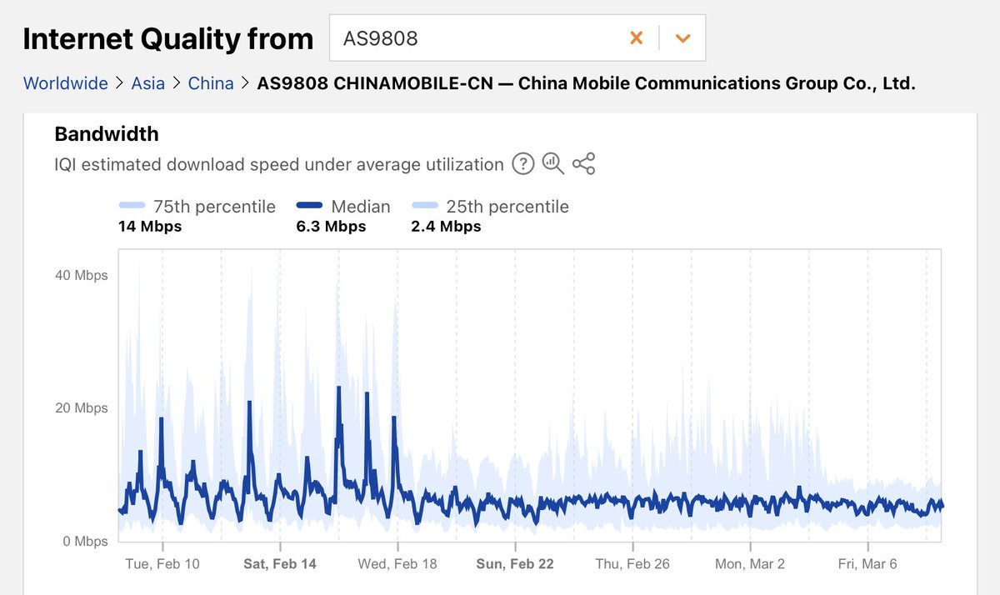

⏚FrankLau⏚
@FrankkkkkkLau
@yeahwu404 是不是维塔斯又把哪个机场草死了

七舅姥爷
@yeahwu404
Cloudflare 数据显示中国至国际互联网速率显著下降
Cloudflare Radar 发现中国大陆国际互联网访问速度在过去一周显著下降。
Cloudflare 互联网质量指数中国大陆数据显示，2月19日之后，联通、移动的访问速度断崖式降低到之前一半；3月4日之后，电信的访问速度断崖式降低到之前一半，移动继 https://t.co/nLCPcaE4rz